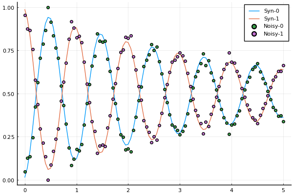
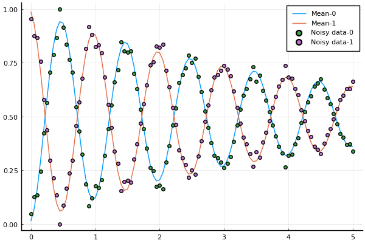
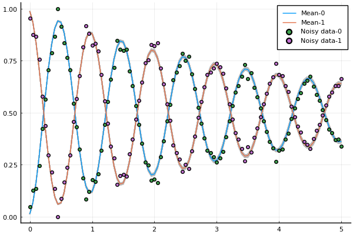

Example 3: uncertainty quantification for a single qubit Ramsey experiment with noise with the Metropolis-Hastings algorithm
using LinearAlgebra
using Turing, Distributions, DifferentialEquations
# Import MCMCChain, Plots, and StatsPlots for visualizations and diagnostics.
using MCMCChains, Plots, StatsPlots
using CSV,DataFrames
# Set a seed for reproducibility.
using Random
Random.seed!(14);
using Plots
include("../src/GLOQ.jl")
pyplot()Step 1: generate the synthetic data
N_states = 2; # number of states
freqs = [4.1] # transition frequency in GHz
omegas = 2.0*pi.*freqs # change to angular frequency
gamma1 = [25e-05] # decay
gamma2 = [25e-05] # dephasing
omr = 2.0*pi*(4.1 - 1.0e-3) # drive frequency
TC = 2.5*17.0 # total control time
# Initial state
initial_state = 0
rho_u0 = [0.0;0.0]
rho_v0 = [0.0;0.0]
rho_u0[initial_state+1] = 1.0
# Duration of the Ramsey experiment, largest dark time
T_Ramsey = 5.0*GLOQ.GLOQ_MICRO_SEC # convert micro-sec to nano-sec
# total number of dark time samples
N_dark_times = 101
t_dark_times = collect(range(0.0, T_Ramsey, length=N_dark_times))Forward solve to generate synthetic data
Ramsey experiment
rho_synthetic_ramsey_u,rho_synthetic_ramsey_v = GLOQ.RamseyForwardSolve(
rho_u0,rho_v0, # initial values, u for the real part, v for the imaginary part
omegas,omr, # transition frequencies, drive frequency
gamma1,gamma2, # decay and dephasing parameters
initial_state, # initial state
TC,t_dark_times,N_states) # control time, dark time, total number of states
population_synthetic = GLOQ.get_population(rho_synthetic_ramsey_u)Add multiplicative and additive noise to the synthetic data
noisy_data = copy(population_synthetic)
multiplicative_noise = 1.0.+0.05*randn(N_dark_times) # 0.01
noisy_data .*= multiplicative_noise
additive_noise = 0.05*randn(N_dark_times) # 0.025
noisy_data .+= additive_noiseNormalize the nosiy data so that it is a population between [0,1]
for j = 1:N_states
shift = minimum(noisy_data[:,j])
if(shift<0.0)
noisy_data[:,j] .-= shift
end
end
for i = 1:N_dark_times
noisy_data[i,:] ./= sum(noisy_data[i,:])
endPlot the noisy data
fig = plot(t_dark_times./GLOQ.GLOQ_MICRO_SEC,population_synthetic,
label=["Syn-0" "Syn-1"])
scatter!(fig,t_dark_times./GLOQ.GLOQ_MICRO_SEC,noisy_data,
label=["Noisy-0" "Noisy-1"])
p_true = [freqs;gamma1;gamma2]Synthetic data with and without noise

Step 2: define the model interface to the Turing.jl and apply the MCMC algorithm
Step 2a: define the model
global sample_number
@model function RamseyExperiment(data)
# Priori distribution
σ ~ InverseGamma()
_freq ~ truncated(Normal(4.1,1e-4),4.1-5e-4,4.1+5e-4)
_gamma2 ~ truncated(Normal(25e-05,2.5e-5),20e-5,30e-5)
_rho_ramsey_u,_rho_ramsey_v = GLOQ.RamseyForwardSolve(
rho_u0,rho_v0, # initial values, u for the real part, v for the imaginary part
2.0*pi*[_freq],omr, # transition frequencies, drive frequency
gamma1,[_gamma2], # decay and dephasing parameters ?
initial_state, # initial state
TC,t_dark_times,N_states;
method="exponential")
#method = Trapezoid()) # control time, dark time, total number of states
_population_ramsey = GLOQ.get_population(_rho_ramsey_u)
for i = 1:N_dark_times
data[i,:] ~ MvNormal(_population_ramsey[i,:], σ)
end
global sample_number
sample_number += 1
println("Sample ",sample_number," done")
end
model = RamseyExperiment(noisy_data)Step 2b: apply the Metropolis-Hastings algorithm
sample_number = 0
chain_size = 35000
@time chain = sample(model, MH(Diagonal([5e-3,5e-3,5e-2,5e-2])), chain_size)
BurnIn = 5000
#@time chain_gmh = sample(model, Gibbs(MH()),5000)
display(plot(chain[BurnIn+1:end]))
display(chain[BurnIn+1:end])
Step 3: Present the data
Step 3a: convert the data to DataFrame format and calculate the mean value of the Markov chain
chain_data = DataFrame(chain[BurnIn+1:end])
freq_mean = mean(chain_data._freq)
gamma2_mean = mean(chain_data._gamma2)The Ramsey curve corresponding to the mean value of the chain
rho_chain_mean_u,rho_chain_mean_v = GLOQ.RamseyForwardSolve(
rho_u0,rho_v0, # initial values, u for the real part, v for the imaginary part
2.0*pi*[freq_mean],omr, # transition frequencies, drive frequency
gamma1,[gamma2_mean], # decay and dephasing parameters ?
initial_state, # initial state
TC,t_dark_times,N_states;
method="exponential")
population_chain_mean = GLOQ.get_population(rho_chain_mean_u)
fig_mean_vs_noisy = plot(t_dark_times./GLOQ.GLOQ_MICRO_SEC,population_chain_mean,
label=["Mean-0" "Mean-1"])
scatter!(fig_mean_vs_noisy,t_dark_times./GLOQ.GLOQ_MICRO_SEC,noisy_data,
label=["Noisy data-0" "Noisy data-1"])
display(fig_mean_vs_noisy)The Ramsey curve corresponding to the mean value vs data with noise

fig_mean_vs_syn = plot(t_dark_times./GLOQ.GLOQ_MICRO_SEC,population_chain_mean,
label=["Mean-0" "Mean-1"])
scatter!(fig_mean_vs_syn,t_dark_times./GLOQ.GLOQ_MICRO_SEC,population_synthetic,
label=["Syn-0" "Syn-1"])
display(fig_mean_vs_syn)The Ramsey curve corresponding to the mean value vs data without noise

Display the difference between the mean value of the chain and the true value
println( "Error of freqs: ",abs(freq_mean-freqs[1]),
" Error of γ₂: ",abs(gamma2_mean-gamma2[1]) )Results:
Error of freqs: 3.7845511347001093e-7 Error of γ₁: 4.406514689200315e-7 Error of γ₂: 8.2938489833124e-7Sample from the Markov chain and perform forward solves
global fig_result
for i = 1:1000
global fig_result
sample_ind = rand(1:chain_size-BurnIn)
freq_sample = chain_data._freq[sample_ind]
gamma2_sample = chain_data._gamma2[sample_ind]
rho_sample_u,rho_sample_v = GLOQ.RamseyForwardSolve(
rho_u0,rho_v0, # initial values, u for the real part, v for the imaginary part
2.0*pi*[freq_sample],omr, # transition frequencies, drive frequency
gamma1,[gamma2_sample], # decay and dephasing parameters
initial_state, # initial state
TC,t_dark_times,N_states;
method="exponential")
population_sample = GLOQ.get_population(rho_sample_u)
if (i==1)
fig_result=plot(t_dark_times./GLOQ.GLOQ_MICRO_SEC,population_sample,
color = "#BBBBBB", label="");
else
plot!(fig_result,t_dark_times./GLOQ.GLOQ_MICRO_SEC,population_sample,
color = "#BBBBBB", label="");
end
end
plot!(fig_result,t_dark_times./GLOQ.GLOQ_MICRO_SEC,population_chain_mean,
linewidth=1.0,label=["Mean-0" "Mean-1"])
scatter!(fig_result,t_dark_times./GLOQ.GLOQ_MICRO_SEC,noisy_data,
label=["Noisy data-0" "Noisy data-1"])
display(fig_result)The Ramsey curves based on parameter samples from the posteriori distribution
